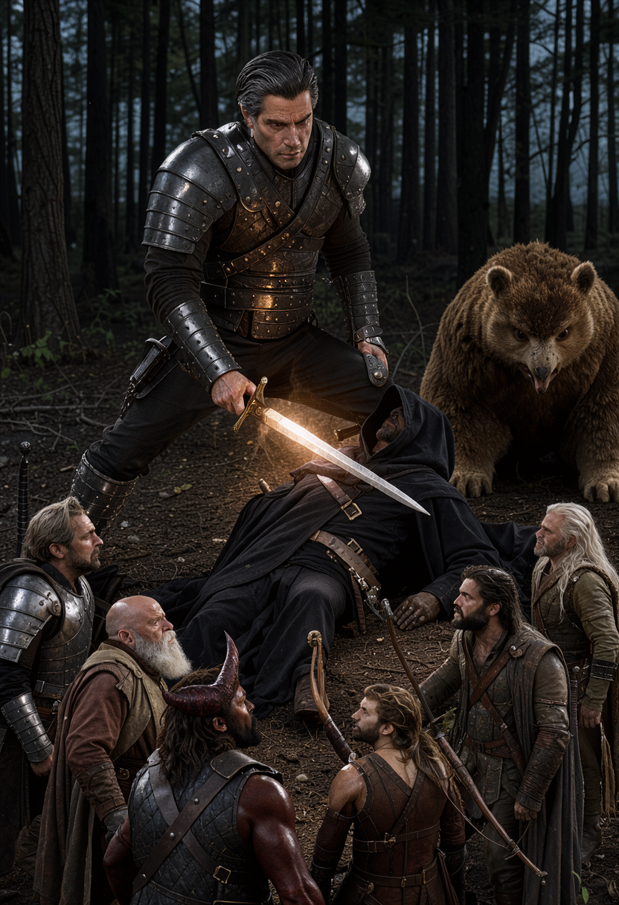
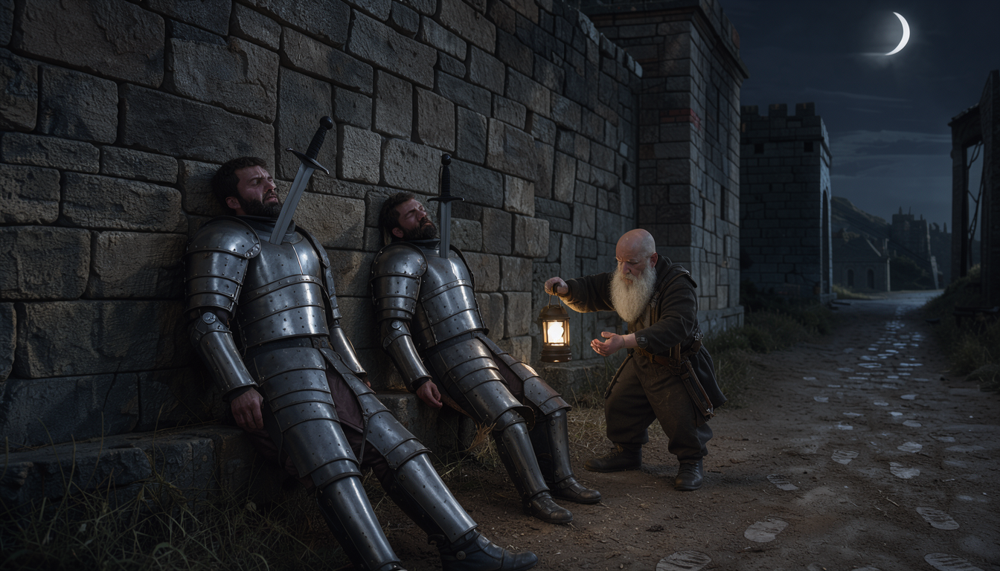
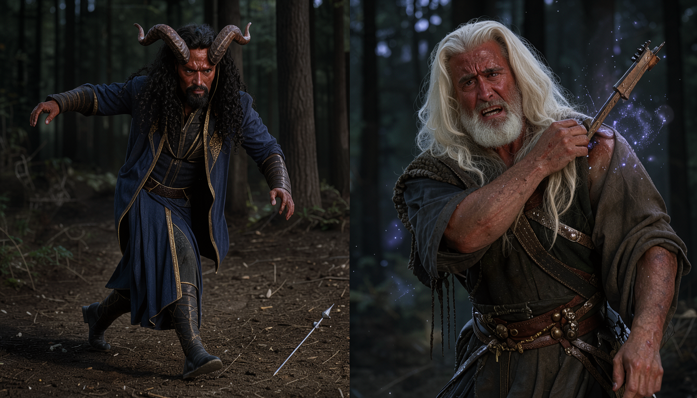
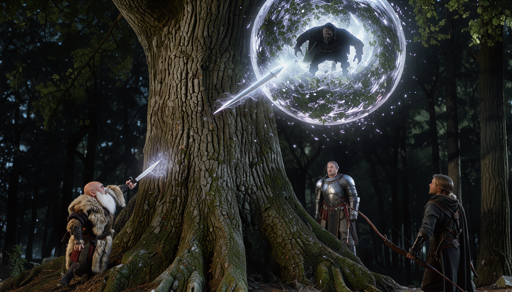
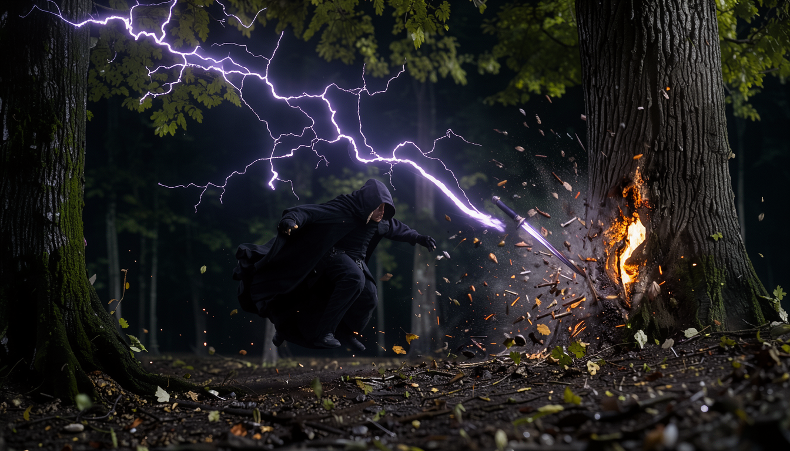
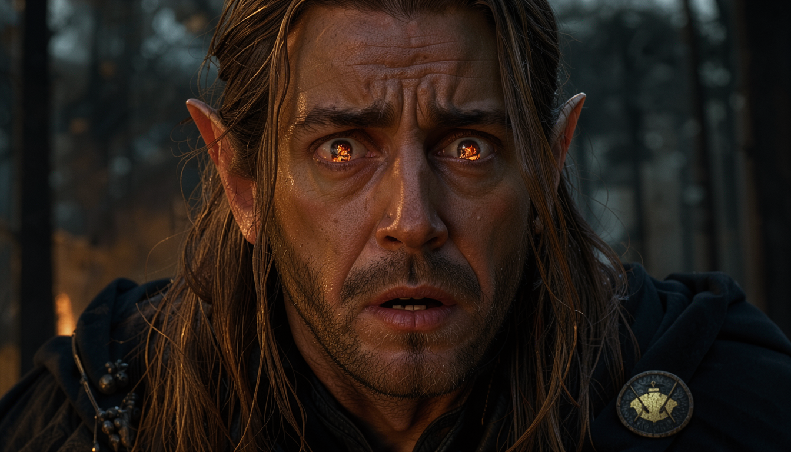
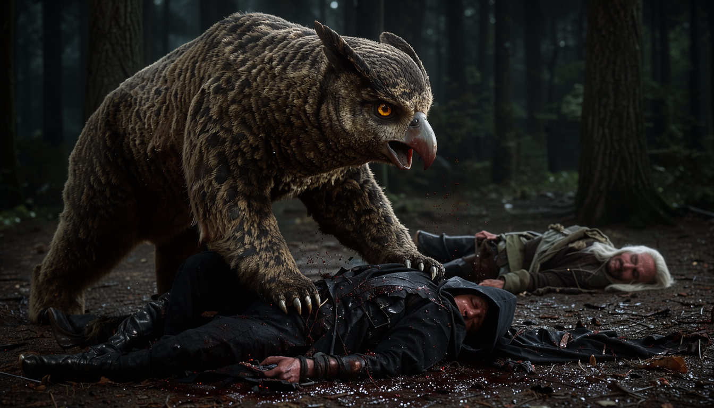
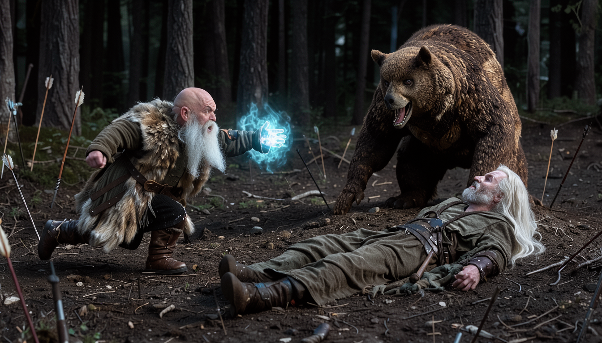
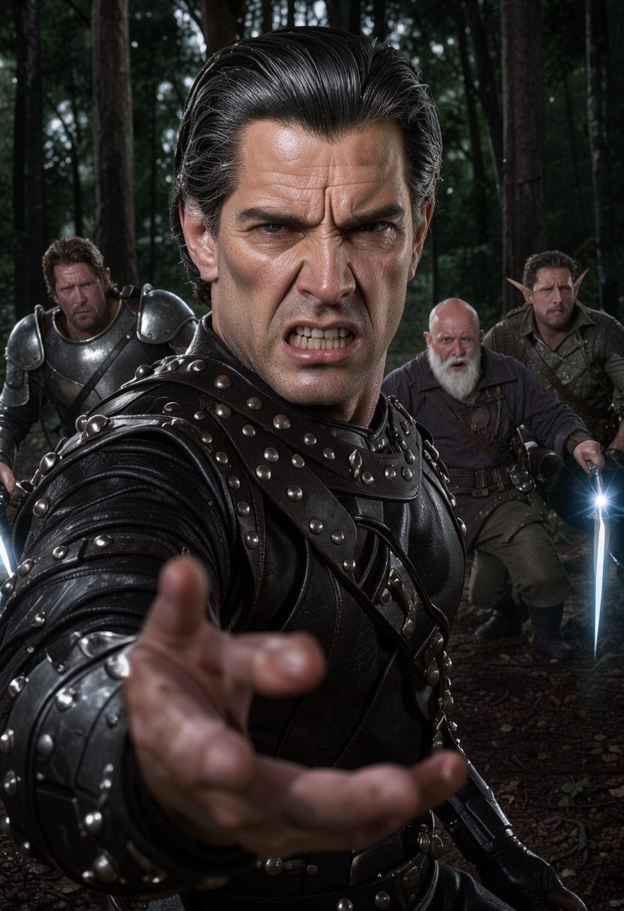

THE CHAOS BRIGADE · JOURNAL 04 · ARROW, POISON, AND A DICE ROLL
The butler came out of the tree with a sword, and none of us recognized him
at first, because butlers are not supposed to drop out of foliage holding
prisoners.
Rewind. Three hours earlier we were standing over two dead guards pinned to
the south gate with short swords through their chests, and the worst thing
about them — worse than the swords, worse than the wall — was their wrists.
Clean. No ink. My party has spent a month treating a wrist tattoo as the only
identification that matters in Neverwinter, and the first corpses of the
rescue have bare arms, which means either the conspiracy has a dress code I
don't know about or these men died for having nothing to do with it.
My name is Ben. I run the game. Last session my players formed a band and
lost a girl. This session they followed the ransom note south with a bear,
a diamond formation, and absolutely no plan for fighting in the dark — which
none of them can see in, except the elf, who can see sixty feet, which is
somehow worse, because sixty feet of forest at night is exactly enough to
watch something come for you.
Pour something. We begin at the wall, with the dead.

Chapter 1 — Cut-Rate Brand of Adventurers
We open split and close bloody, which for this party counts as a reunion. When we left them: seven heads around a festival table, one girl gone, one dagger in one note pointing south of town. Tonight six walk out the south gate with an owlbear and come back — well. That is the book. Walk with me. South gate. Moon like a rumor. Bear in front.
The vote takes ninety seconds and tells you everything. Gulgrim: it's the guards or the butler, either way we go now, through the specified gate, immediately. No time on the note? Then no time to waste. The bard promised the broadcast stone by morning — morning can wait, the girl can't. Chip pledges himself on the spot, on the record: the party helped him, now he helps back, which from Josh is practically a blood oath. Rocketcandy proposes the formation strategy: no stealth, bear clears the path, diamond around the soft center. Water Bear gets collected from the stable, where every horse and donkey in the building is pressing itself into the far fence, because some reputations precede their owners and some owners precede their reputations. Thinner crowds now — the Battle of the Bards is ending, lanterns coming down, the festival folding itself away like it knows something. It does not know anything. It is a festival. But the party marches through its leftovers feeling watched anyway, and here is the miserable part: they are right.
Chapter 2 — South-ish Enough
Out the south gate by scant moon — not full, never full when it matters. Gulgrim is out front behind Water Bear, which is the correct place for a dwarf (low center of gravity, high center of purpose).
## 7. Full-illustration moments (10 plates)
1. Cold-open plate: leather-Biggins on the boulder, sword at a prone void throat, party ringed below in dagger-light (Ch. 1). 2. Diamond formation marching by scant moon, bear vanguard (Ch. 2). 3. Impaled guards on the gate wall, clean wrists catching moonlight (Ch. 3). 4. Sidestep: bolt in dirt, Keechwah untouched; cut to Chip's shoulder burst (Ch. 4 — diptych). 5. Light-dagger stuck halfway up the trunk, 20-ft globe in the leaves (Ch. 5). 6. Witch Bolt arcing through branches, bark hole singed, figure convulsing (Ch. 5).
Past the walls, the road narrows and the moon thins further. Six walkers and one bear.
Chapter 3 — The Unmarked Dead
Gulgrim sees them first, because Gulgrim is where dwarves belong: out front, behind the bear, low to the ground and high on purpose. Two guards. Pinned to the south gate wall with short swords through their chests, holding them upright like specimens in a collection nobody ordered. Moonlight doing nothing for anybody. The party stops the way parties stop behind dwarves. All at once.
And then James does the thing James does, which is investigate the corpses before anyone finishes gasping. Investigation, advantage, sixteen. He checks the wrists — of course he checks the wrists, the whole table has been trained like dogs on wrist ink for a month — and looks up with the worst news in the session so far. Clean. No tattoos. Neither of them. Whatever these men were, they were not the marked city watch, and they were not the guild's extortion crew either, because the guild signs its work and the watch is signed by the city. Two dead men with swords in them and nothing on their arms, and every identification system the party owns just failed at once.
Shade asks the only useful question: did Chip ever share the tattoo lore? And Chip — who has been carrying the single most relevant fact in the party for two sessions — says he told them nothing yet. Been too busy. The lorekeeper of the guild ink has been sitting on it since the general store, through the apothecary, through the festival, through the band, and mentions it now, at the corpses, which is very Chip: the right information, at the worst time, delivered cheerfully. The dirt path past the cobblestones gives them the rest of what the dead men can't: heavy boot prints, more than one set, exact number indiscernible, heading further south. Debate, brief and sharp: alert the city and risk questioning, lose the trail, lose the girl — or pursue, now, into the dark, seven shapes against unknown archers. They pursue. Of course they pursue. The butler theories walk with them: recruit him, he's strong; prove to him we can protect her; and Aaron's movie-logic special — maybe he faked the whole kidnapping to teach them a lesson, took her home nicely, left the note to freak them out. "I watch too many movies," Aaron says, which at this table counts as a rules citation.

Chapter 4 — Dirty 20 and 22 Damage
Past the walls the road narrows into forest, a stream running alongside it like a second road for people who don't need roads. The prints give out where the ground goes soft and treacherous. Darkvision roll call, because half the party is about to fight blind: Derek, sixty feet, elven eyes; everyone else, thirty, torchlight and hope. Diamond formation, Rocketcandy spearheading out front, and then the forest demonstrates the problem with formations, which is that they assume the enemy will be where you are looking.
The first bolt comes for Keechwah. Dexterity save: dirty twenty — a twenty, total, dodge with math on top. He steps aside and the bolt buries itself in the dirt at his feet, and Aaron laughs the laugh of a man whose number came up, because a dirty twenty is the game winking at you. Keechwah strains for the shooter — perception three, natural two on the die — and gets nothing but a quadrant. Top right. Somewhere. The party draws weapons in the dark, a sound I have come to love the way other DMs love thunder, and then the second bolt comes for Chip. Dexterity save: four. Ten piercing plus twelve poison, twenty-two total, buried deep and high in the shoulder. Chip goes down to a knee in the leaf mold with poison working through him, and the rescue has its first casualty before it has a target, a direction, or the faintest idea what is shooting at it. Twenty-two damage. Say it with me. The night is young and the dice are already cruel.

Chapter 5 — Aim for That Blob
Initiative gets rolled in the dark with everyone shouting numbers — turn order, high goes first — and Vadania goes first — eighteen — and does the disciplined thing: bow readied on visibility, finger off the string until there is something to hit. Rules check, confirmed, loaded gun placed on the table. Chip, bleeding poison in the dirt, does the Chip thing instead: goes starry. Light blooms off him in ripples — beautiful, conspicuous, tactically insane light, the kind of glow that says here I am in a forest full of archers — and by it he reads his own wound like a textbook. Perception sixteen: steep downward angle, shoulder high, very close range, from the left. He moves. Heals himself eight. Files it. The scholar bleeds neatly.
Shade melts thirty feet into a bush and holds. A bolt comes for Rocketcandy: seventeen against eighteen armor — miss, dodge, the paladin's expensive training paying for itself one point at a time. Water Bear sniffs the wind — nine, Keen Sight re-roll, ten — and finds nothing, and I want you to sit with that for a second, because the bear will matter enormously in about twenty minutes, and right now he is useless, and the table has already started joking about it. Keechwah, squinting into the black: perception thirteen, and the wound-depth math says above, close, personal. He readies Witch Bolt on seeing anything at all. The forest holds its breath. Everybody holds everything. Loaded guns, everywhere, no targets.
So Rocketcandy walks to the biggest tree and yells up it. "Yo, anybody up here?" Silence. "Then I'm gonna start chopping down the tree," he announces, and I tell him — gently, because I love him — that as much as I appreciate his faith in his ability to fell old growth in one swing, he cannot. He climbs instead: ten feet up, half speed, armor clanking like a shopkeeper's bell, and halfway up he looks higher and stops. Perception fourteen. Dark mass. Fifteen feet above him in the thick foliage. "Barely fingertips touch," I tell him, and the table leans in, because there is something up there, and then the something moves: acrobatics twenty-two, a swing around the branch, and both feet into the paladin's chest — six bludgeoning for the kick, six more for the fall, Rocketcandy out of the canopy and prone in the dirt with the whole forest laughing except the forest is trying to kill them.
And here — here — is where Gulgrim invents artillery. Thirty feet, a dagger, a Light spell, Athletics ten with fresh Heroic Inspiration I hand him on the spot for sheer audacity: the dagger sticks halfway up the trunk and blooms into a twenty-foot globe, and suddenly the blob has edges. "Aim for that blob," Gulgrim yells, and the loaded guns go off together: Vadania's readied bow, nineteen, five damage, a grunt from the leaves, stays up; Keechwah's readied Witch Bolt, twenty-two, six lightning, a singe-hole through the bark — and the figure drops out of the tree, hits the ground on its feet, and the dagger-light shows the table what they've been fighting. A cloak blacker than the dark around it. Midnight void, tailored. And on the chest, catching the light: an emblem.


S2 · Light the blob — Throw, stick, glow, drop.
Chapter 6 — We Out Here Having Lore
Vadania looks at the emblem and stops being in a combat. I send the image to the channel — to Derek alone, private message, mid-initiative, while everyone watches him read it — and what comes back across his face is the reason I run this game. Burned village. He remembers. Does he ever forget the night his village burned down? He remembers. Constitution save, dirty twenty: he takes the memory, folds it, puts it away, keeps his turn. Then he dashes thirty feet northeast, plants himself in front of a silent crouching void, and shouts the only thing anyone has said to the enemy all night: "Who are you? Identify yourself." Bow up. No action left to use it — the dash ate everything. Demand first, ammunition later. The figure crouches lower. Says nothing. Somewhere behind him, Derek says it for the table, quiet and exact: "We out here having lore."
The rest of the round belongs to Chip, who is having the best worst night of his life. Starry Wisp, seventeen, five damage plus anti-invisible light that sticks to the figure until Chip's next turn — marked, glowing, no more hiding — and then the bonus-action starry arrow, seventeen again, six more, and the void is hurt, lit, and still standing, which tells you everything about what lives inside that cloak. Shade's shortbow speaks from the bush — seventeen, twenty-four with the sneak math, nine plus seven is sixteen — and now the figure is singed, bolted, lit, and bleeding, and the table starts doing the thing tables do when the math turns: leaning forward, counting, certain. Certainty, at my table, is always premature. The forest has a second archer, and it has been waiting for exactly this moment of certainty to spend it.

Chapter 7 — Owlbear Justice
Twenty-two on Chip. Seven piercing, eight piercing, ten poison — twenty-five, called out one number at a time the way executioners read sentences — and Chip goes down to zero in the dirt. The starry light snuffs out like a stepped-on candle. Death saves start — three rolls, three failures and he dies, three successes and he holds — and the table does the quiet math that no one says aloud: two failures and the druid dies in the mud while the bear watches. And the bear — Water Bear, who failed every perception check all night, who sniffed a nine and a ten and found nothing, who the table has been joking about for an hour — puts both paws through the first marksman. Twenty-two for eight. Fifteen for eleven. Eviscerated. Blood on the leaves, cloak in ribbons, silence where the sniper was. The bear stands over the body breathing hard, and the forest goes quiet except for dice, and Josh says nothing at all, because there is nothing to say when your best friend does your avenging for you.
Triage, then, at speed. Where's the second shooter? Triangle ping says northeast. Other tree, across the stream — not the first tree, a new one. Derek says the fireball word and St3v3D says he doesn't care, he'll cast it, and Ben says the line the transcript will keep forever — "there are no eyes in D, but there are seven eyes in I don't care how big the room is, I cast Fireball" — and then everybody remembers the rescue target is somewhere and stands down from arson, which is growth, of a kind. Detect Magic, thirty feet: nothing. Gulgrim runs the engine — Healing Word on Rocketcandy for ten mid-dash (a word that heals, cast as a bonus alongside everything else), then the long run to Chip, then Cure Wounds level two for sixteen (hands-on, bigger): stable, no more death saves, breathing — plus a bonus-action Healing Word on Keechwah for ten in the same round, because James has decided healing is a full-time job with overtime. Vadania double-dashes east. Chip's death save: fourteen. Alive. Shade sixty feet to cover in one bound. Enemy nineteen on Keechwah: twenty damage, seven and eight and five poison. Water Bear confirms northeast, moves twenty feet, a furry compass. Gulgrim's second shift: Cure Wounds done, Healing Word on Keechwah for ten. Status, called out like a hospital drama: Chip stable, Keechwah lit but standing, Rocketcandy patched, Vadania closing, Shade hidden, bear inbound. And then Chip — just revived, half movement, rolling at disadvantage because he died six seconds ago, allowances made — sits up in the dirt, squints northeast, and calls it: big tree, one-sixty-five to the middle, one-twenty to the foliage. Moonbeam goes down, five-foot radius, Constitution thirteen. Nothing illuminated. Nothing damaged. Nothing visible. Enemy thirteen on Keechwah — armor twelve, it lands — eighteen plus seven poison, twenty-five. Keechwah goes down in the dirt next to everything, and the forest, which has been so loud all night, gets very, very quiet.


S3 · Down and avenge — Silence to rage to triage.
Chapter 8 — Where Is She?
The north tree shakes. Not wind — a scuffle, inside it, branches thrashing with weight and intent. And then a black figure gets hurled out of the foliage onto the rock face below: prone, winded, cloak tangled. A second figure lands after it, standing, balanced, sword already at the first one's throat before the leaves settle. And then the dagger-light finds the standing figure's face, and the standing figure's clothes — studded leather, assassin-cut, moving without a sound — and the table stops breathing, because the sword, the stance, the silver-streaked hair all belong to someone who serves tepid water.
Biggins.
No butler suit. No tray. No manners. "Where is she? What have you done with her?" The blade presses. A shallow cut, deliberate, non-lethal, professional — the kind of cut that says I know exactly where every vein is. Back to the throat. And then, to the captive, to the night, to the ring of battered adventurers staring up at the boulder in the dagger-light: "I never should have trusted a cut-rate brand of adventurers like you." And then he turns that disgust on us — the whole gathered party, the rescuers, the victims of the evening — and casts Vicious Mockery — one perfect insult, magically wounding, four psychic damage — and the session ends. Gulgrim gets a Healing Word onto Keechwah for eight just in time — timed to the second, spared the insult by magic and reflexes — and the rest of us take the four. All of it. Every point. We earned it. We left a girl alone at a festival table, and her butler just told us what he thinks of that, in leather, with a sword, and the dice are put away, and nobody is laughing, and that — that — is where we stop.
## ART LOCK (appendix): reuse audit + generation plan
No prior session-04 art exists — audit J01–J03 plates for establishing beats (diamond march, forest entry may reuse), then generate:

S4 · Savior drop — Sword, then insult.